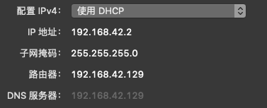

Note on Network Commnunication
- Note on Network Commnunication
- General Introduction
- Specific Application Notes
- Hardware
General Introduction
Network connects devices to transfer data / information.
LAN and WAN
- LAN: Localized network, connected machines in the same area.
- WAN: Wide area, Internet is the largest WAN!
The 2 types are less distinct now, they are blurred because of cellular tech and wireless network.
Network Topology
- Bus,
- Ring,
- Star,
- Mixed
Internet: The largest WAN.
Reference
-
http://www.informit.com/articles/article.aspx?p=131034
-
More introductory https://blog.hubspot.com/marketing/how-the-internet-works
Protocol
Protocol defines the format of data transmitted and received.
- Transmission Control Protocol/Internet Protocol TCP/IP: The collection of communications protocols used to connect hosts on the Internet. TCP/IP is by far the most commonly used network protocol. The TCP and IP protocols are both part of TCP/IP.
- Transmission Control Protocol TCP: dividing data into packets at one end of a transmission and reassembling those packets at the other end!
- Internet Protocols (IP)—The protocols for managing and transmitting data between packet-switched computer networks originally developed for the Department of Defense (DOD). E-mail, File Transfer Protocol (FTP), Telnet, and Hypertext Transfer Protocol (HTTP) are all Internet Protocols.
- Ethernet: The most widely implemented LAN standard.
The packet switching is a breakthrough at that time! https://blog.hubspot.com/marketing/how-the-internet-works
Seven layer model of OSI (Open System Interconnection)
each layer hides the detailed functions it performs from the other layers
Cf. Multi-level model of neural computation, one layer of algorithm may not be relavent to the level of implementation
Cf. Table 3.1 The OSI Model
Number Layer Function 7 Application Deals with program-level communication. 6 Presentation Performs data conversion functions when needed. 5 Session Establishes and maintains communications channels. 4 Transport Handles end-to-end transmission and integrity of transmitted data. 3 Network Routes data from one system to another. 2 Data Link Handles the physical passing of data from one system to another. 1 Physical Manages the transmission and reception of data on the network media.
Modern network can be simplified into 4 layers
- Application: represent data and facilitate interaction
- Transport: Packaging and depackaging data
- Internet: Find IP and determine which route the data will take.
- Physical network: Hardware carries the data as phycical signal in wires radios…
Packet
Data cannot be transmitted in its bulk, mostly, they are splitted and transmitted in small packet, containing header and data. Header contains:
- What kind of packet it is (protocol version number)
- How big the header of the packet is (packet header length)
- How to handle this packet (type of service telling the network whether to use the following options: minimize delay, maximize throughput, maximize reliability, and minimize cost)
- How big the packet is (overall length of packet; as this is a 16-bit field, the maximum size of an IP packet is 65,535 bytes, but in practice most packets are around 1,500 bytes)
- A unique identifier so this packet can be distinguished from other packets
- Whether this packet is part of a longer data stream and should be handled relative to other packets
- A description of where this packet fits into the data stream relative to other packets (the fragment offset)
- A checksum of the packet header (to minimize the potential for data corruption during transmission)
- Where the packet is from (source IP address such as 10.10.10.5)
- Where the packet is going (destination IP address such as 10.10.10.10)
- Option flags governing security and handling restrictions, whether to record timestamps, whether to record the route this packet has taken, and whether to use strict or loose source routing
- The information this packet carries
Typical IPv4 header

Example: TCP and UDP
- TCP: establish reliable connection and transmit data, guaranteed packets are reached and processed in the same order!
Using three-way handshake to establish a connection.

How a Packet gets to the destination
Postal service is a model for such communication:
- You pack something (Data) up,
- Add the target zip code, their address (IP address) and your address on the envelope (the Header)
- Postal service find the rough target by Zip code, and find precise site by address.
Types of Address
To send something to a destination, you need an address. There are several addresses of different use.
- Media Access Control MAC address : it’s a hardware address, usually hard-coded by network interface card(NIC 网卡). Used to uniquely identify each node on the network.
- IP address:
- For IPv4, it’s 32bits address, represented by dot seperated decimals for every 8 bits numbers. E.g.
255.255.255.255 - IPv6, it’s 128bits address, represented by 8 grous of hexadeimal for each 16bits
2001:cdba:0000:0000:0000:0000:3257:9652- https://test-ipv6.com/
- For IPv4, it’s 32bits address, represented by dot seperated decimals for every 8 bits numbers. E.g.
- Web address(domain name): What we use most, to reach a remote website / server
- (www.google.com) domain name service (DNS) is a service to provide the IP address for such strings e.g. “www.google.com”. DNS server has a hierachical structure: if the local DNS server does not know the address for a string, it will query a higher level one, until it gets the result.
- Uniform Resource Locator (URL): Is the full address to access your target resource, it may contain directory(
/module/), page (1_2.html) and data(/url.gif) path in the node. www.webpages.uidaho.edu/info_literacy/modules/module1/images/url.gif
IP address structure
It’s easy to see there is not enough public address space within 32bits. Multiple methods are used to resolve.
When you check your IP address you can get multiple 32 bits numbers

Subnet and IP mask: There is a binary mask showing which part of the IP address denotes network which part denotes host. Normally bit wise operation $mask\ \&\ IP=subnetID$, $\wedge mask\ \&\ IP=hostID$. Each device can have a unique hostID. For the example, only the last 8 bits are host IP, first 3 octets are network IP.
Several class of address pocesses different subnet mask. (Seems not important now!)
- Class A: 0— : any address from 0.0.0.0 to 127.255.255.255. Mask FF:00:00:00
- Class B: 10– : any address from 128.0.0.0 to 191.255.255.255. Mask FF:FF:00:00
- Class C: 110- : the addresses ranging from 192.0.0.0 to 223.255.255.255. Mask FF:FF:FF:00
- Class D: 1110 : addresses from 224.0.0.0 to 239.255.255.255. Used for multicasting
- Class E: 1111 : addresses between 240.0.0.0 and 255.255.255.255. Largely not used.
https://www.digitalocean.com/community/tutorials/understanding-ip-addresses-subnets-and-cidr-notation-for-networking
IP Address Assigning - DHCP
-
The static way is just to assign a fixed IP number to a device.
-
The dynamic way of assigning IP is Dynamic Host Configuration Protocol DHCP. DHCP server assign IP to each device. Note each IP has a expiration time, and it has to renew the lease upon expiration.
- At home the DHCP-server is usually located in router!
- Note: there is a fixed range of IP that a DHCP server can assign. So when this happen the additional device cannot connect to network.
- https://www.youtube.com/watch?v=RUZohsAxPxQ
Some IP addresses are special and reserved for local / private network, so these IP are not publicly routable on the internet.
- 10.0.0.0 -10.255.255.255
- 172.16.0.0 - 172.31.255.255
- 192.168.0.0 - 192.168.255.255
https://www.cisco.com/c/en/us/support/docs/ip/routing-information-protocol-rip/13788-3.html
https://support.microsoft.com/en-us/help/164015/understanding-tcp-ip-addressing-and-subnetting-basics
Adding Address Capacity - Network Address Translation(NAT)
Note, Network address is not enough! So they create this method:
- There is only one public address which hides a lot of private addresses. This method largely increase the total number of IP address!
NAT can translate local network IP into publically routable IP! Perform relay on the packet! Dynamically changing the receiver address / source address.
It’s like the package receiving and dispatching center for Amazon (京东自提点).

Now, the Wifi Router usually opens the private network, and hide the private IP from public.
- To know your public IP, ask the website / server which will only see your public IP.http://ip4.me/.
- The modem / router setting page will show the public IP address as well!
- The public IP is related to the location of the router. https://www.iplocation.net/ Here is the APIhttps://www.db-ip.com/.
- And VPN can hide this information
https://mkdev.me/en/posts/how-networks-work-what-is-a-switch-router-dns-dhcp-nat-vpn-and-a-dozen-of-other-useful-things
How to find target address? - Routing
Locally, they can use Address Resolution Protocol (ARP) to ask which is the desination node for an IP address, the machine possessing the address will respond with a packet (MAC)! So you can connect with machines in the same local network quite easily.
Remotely, you will use If the IP address is remote, the router will handle this process!
Note, some individual trying to fetch the packet may reroute it, and this may be done by changing the routing table of the router.
Specific Application Notes
Using these basic picture and concepts, we can understand many common web service and applications in their core.
Note: Ports
Note in actual application, one device has a IP address, and different application use different ports to communicate!
netstat -tulpn | grep LISTEN # Linux
netstat -anp tcp | grep LISTEN # MacOS
netstat -ab # Windows
Virtual Private Network (VPN)
Motivation This is invented to make users in a distant place (different offices sites) to share the same private network. Communicating directly on the network is not safe, encripting it can make it safer!
Secure Sockets Layer (SSL)
Secure Shell (SSH)
WiFi
WiFi Direct Connect (WiDi)
Hardware
Hub and Switch(交换机)
Switch is a metaphor from railway, incoming data can be filtered / sorted and dispatch to different devices connected to the switch!
Hub is dumber, the received packet are sent to any machines connected with it. And the device perform the filtering itself.
Modem(调制解调器) and Router(路由器)
Modem is changing network signal into physical signal in corresponding devices —— wires fiber, telephone wires, satellite signal, radio …
Router signal the network.
Default gateway is the gateway it reach first when going to another network (Internet)